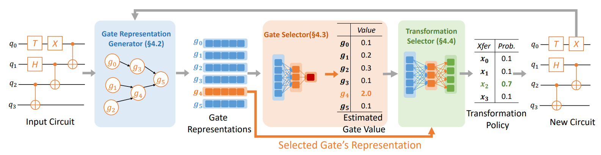
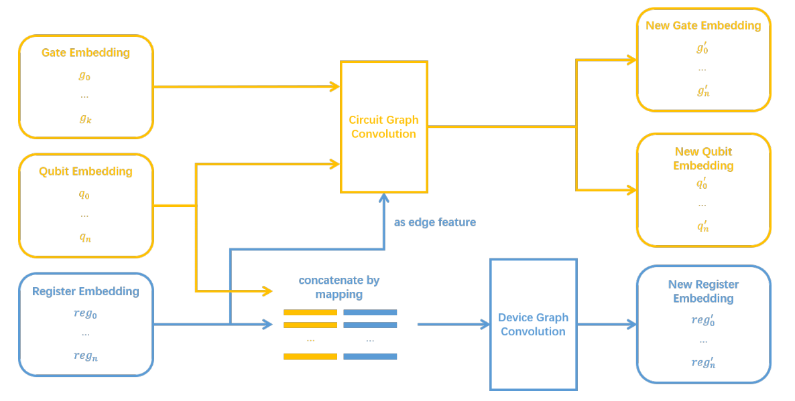
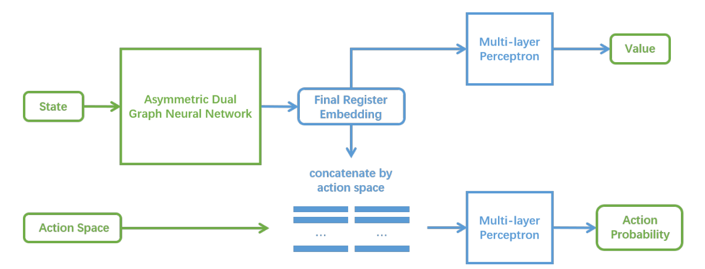
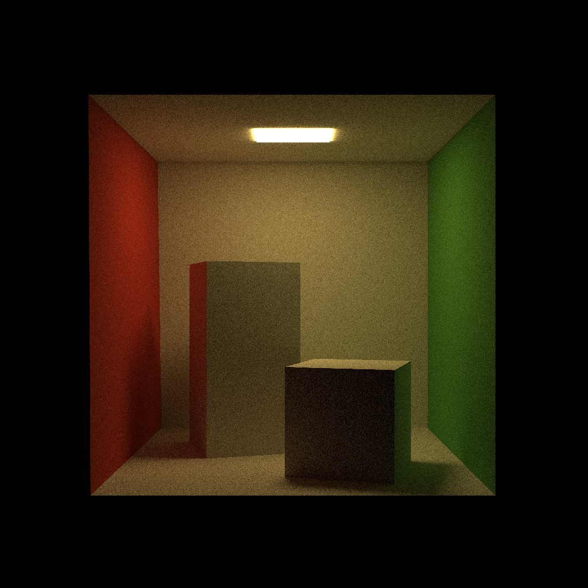
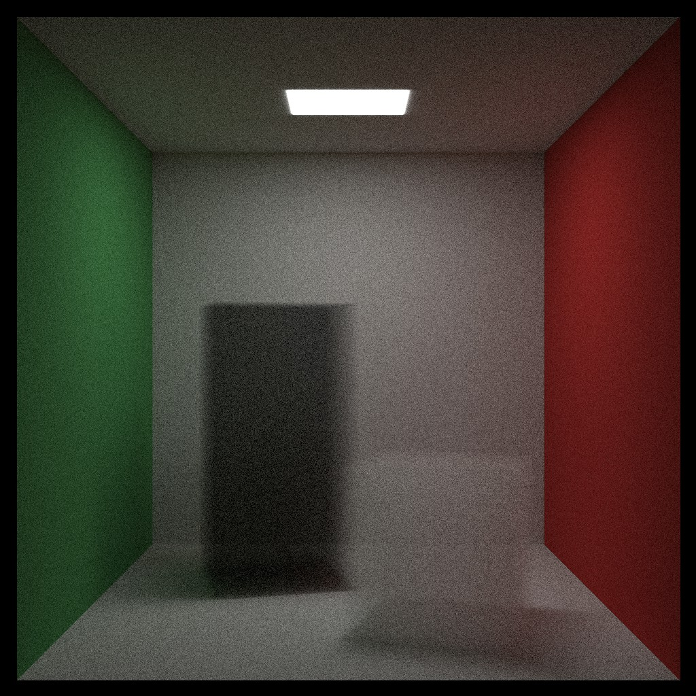
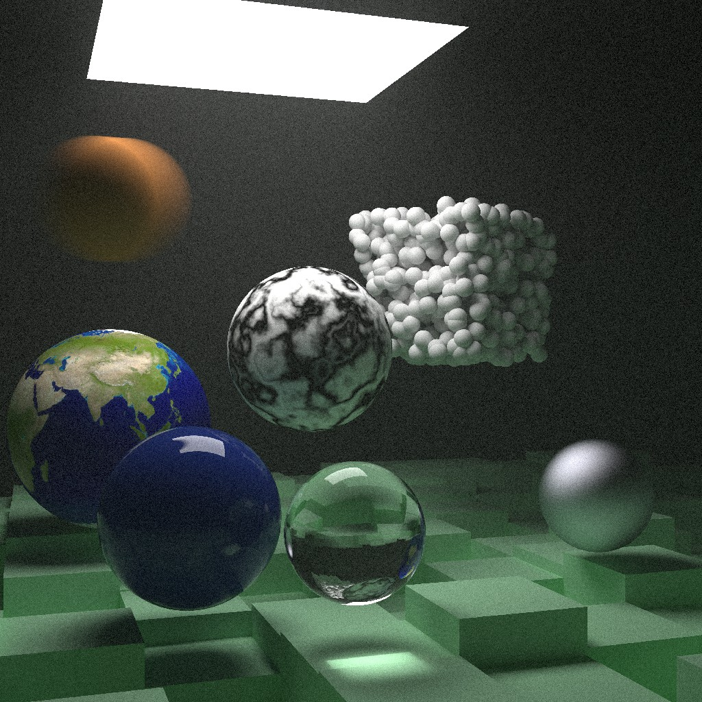
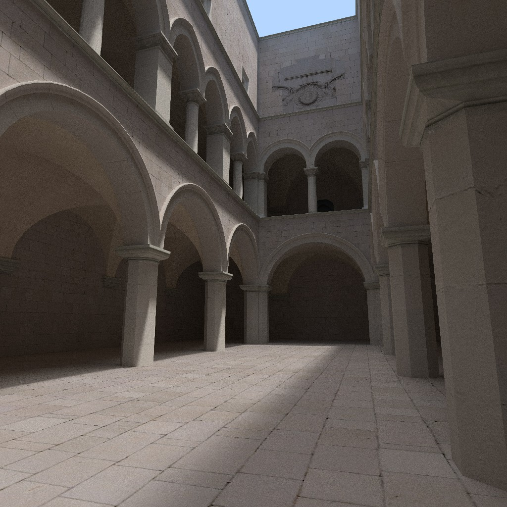
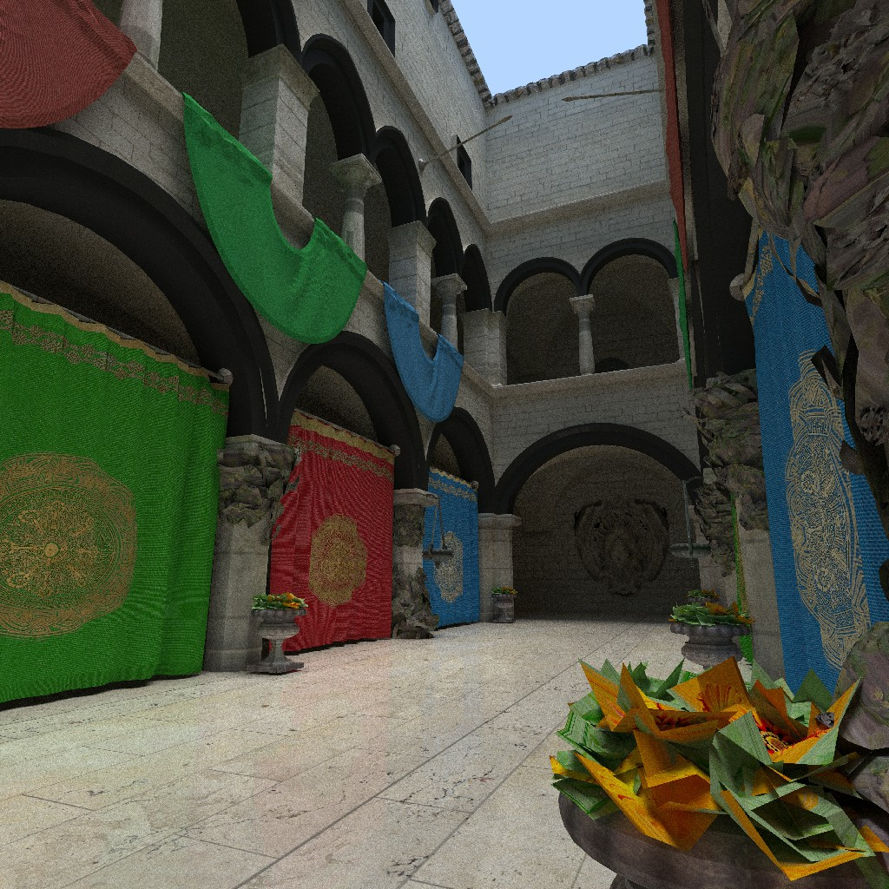
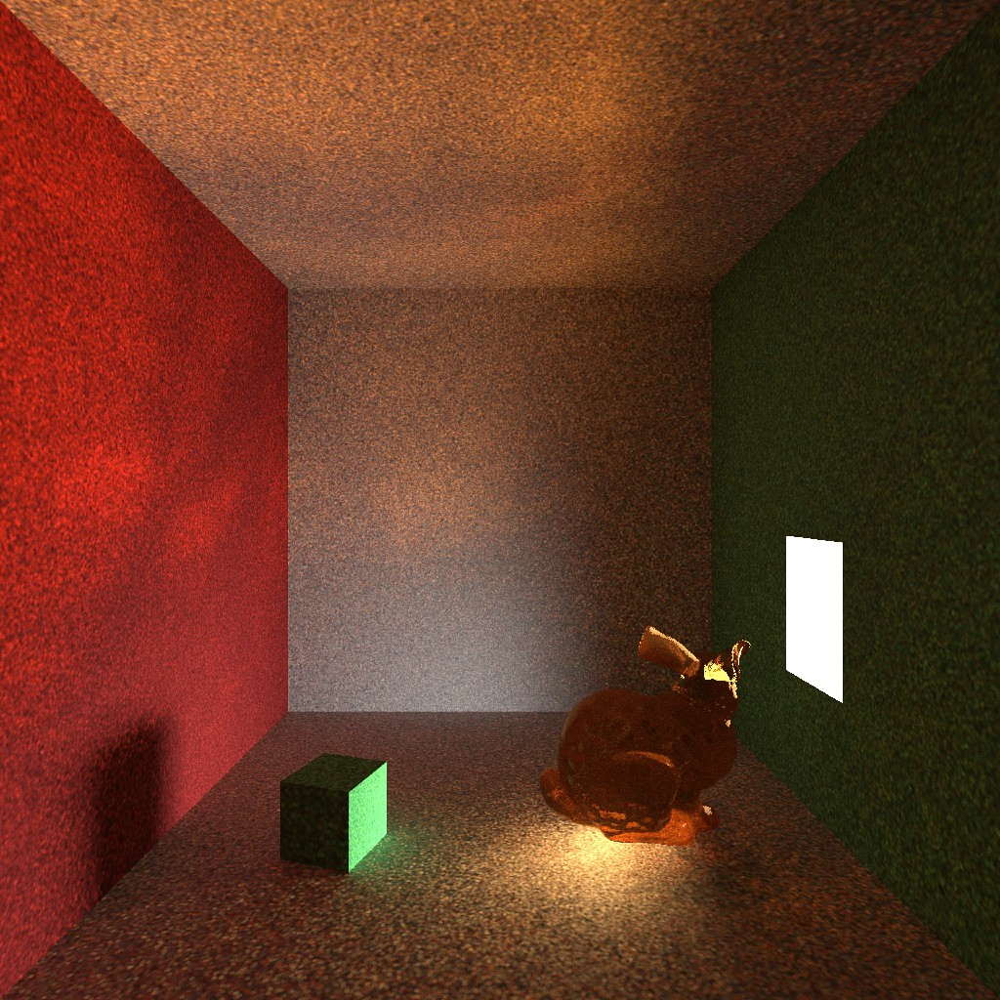

Undergraduate Student
Yao Class (Computer Science),
IIIS
Tsinghua University
About
I am a fourth year undergraduate student at
Yao Class (Computer Science),
Institute for Interdisciplinary Information Sciences, Tsinghua University.
My research interests focus on the intersection of distributed systems and compilers with other emerging fields, including
machine learning and quantum computing.
Research
Currently, my research mainly focus on two directions: distributed reinforcement learning systems
and learning-based quantum compilers. Click on the titles below to see details about each research
project.
• Distributed Muzero
Distributed Muzero is a distributed reinforcement learning (RL) training system based on sample-efficient
RL method EfficientZero. It significantly accelerates EfficientZero using single machine optimizations and distributed training,
while retaining EfficientZero's high sample efficiency. Distributed Muzero achieves human-level performance with only 300k samples
and 30 minutes of training time on the Atari-100k benchmark, which is 17× speedup compared with EfficientZero.
-
This work led to a co-first author submission to ICLR 2023 (currently in review).
Note that the name here is different from the submitted one for anonymous requirements.
-
A byproduct is SMOS,
a high throughput low latency shared memory object store. It's also available as a standalone
Python package on PyPI: SMOS_antony.
• Learning-Based Quantum Circuit Optimizer

Quantum circuit optimization aims to reduce the number of quantum gates in a given quantum circuit. This
can usually be achieved through
quantum circuit transformations, which substitutes a sub-circuit with other
functionally equivalent circuits. In this work, we guide the application of quantum circuit transformation
with reinforcement learning. With our novel neural architecture and RL-training procedure, our RL-based
approach significantly outperforms existing circuit optimizers on almost all benchmark circuits. It also
learns to perform rotation merging, which is a complex, non-local circuit optimization implemented as a separate
pass in existing optimizers.
-
This work led to a third author submission to ASPLOS 2023 (currently in review).
Note that the name is omitted here for anonymous requirements.
• Learning-Based Quantum Circuit Layout Synthesizer


Quantum circuit layout synthesis (a.k.a. qubit mapping) aims to add the fewest number of swaps into
a logical quantum circuit to make it executable on a physical quantum device. This problem has been
proven to be a NP-complete combinatorial problem. In this work, we guide the insertion of swaps with
reinforcement learning. We design a novel
Dual Graph Neural Network to capture the complex
state information and propose a joint RL training scheme that incorporates search for good initial
mappings. Experiments show that our RL-based approach can significantly outperform existing qubit
mappers on multiple benchmarks.
-
We plan to submit this work to ICML 2023. (I will be the first author)
Computer Graphics & Games
I am also a big fan of computer games and computer graphics. I enjoy games that tell epic stories. Some
of my favourite games include:
Halo,
EldenRing,
Gears of War,
and
Mass Effect.
This interest also motivates me to build games and renderers myself. Here are some of my work:
• Parallel Ray-Tracing Renderer






The figures above are generated using the parallel ray-tracing renderer I built in the course
project for
Advanced Computer Graphics. This renderer generally follows the framework
introduced in
Ray Tracing Mini-books by Perter Shirley
(by the way, these three minibooks are perfect tutorials for beginners to ray tracing), but more
advanced techniques are implemented beyond the scope of these books. The techniques supported
include:
-
Integrator: Monte Carlo Path Tracing, Photon Mapping.
-
Accelerator: BVH (AABB with SAH), Kd-Tree.
-
Complex Models: .obj model with .mtl material description.
-
Materials: Lambertian, Metal, Dielectric, PBR material, Isotropic, Diffuse Light.
-
Other Effects: Bump Texture, Participating Media, Off-focus & Motion Blur.
Code for this project can be found in: AntonyMei/RayTracingRender.
Plain Academic